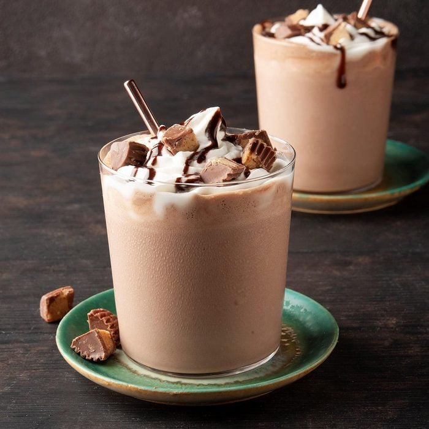

Chocolate peanut butter shake with Greek yogurt

ABOUT THIS RECIPE
What's better than chocolate and peanut butter?
This scrumptious shake uses Greek yogurt as the main protein source and includes
high calorie ingredients like peanut butter and honey to promote weight gains!
INGREDIENTS
- 1 large banana
- 3/4 cup (180 mL) whole milk
- 3 tbsp. (21 grams) unsweetened cocoa powder
- 3/4 cup (170 grams) full fat plain Greek yogurt
- 1 tbsp. (21 grams) honey
- 1 tbsp. (16 grams) peanut butter
INSTRUCTIONS
- Combine all ingredients in a blender and blend on high speed until thick and smooth.
- It's recommended to add the cocoa powder gradually to prevent caking.
- May the GAINS be with You!
NUTRIENTS
- Calories: 587 kcal
- Protein: 30 grams
- Fat: 23 grams
- Carbs: 65 grams
BACK TO HOME PAGE